Android Government Data SDK Sample
Overview
This sample will provide the steps to create a simple Android application that can consume Goverment Entity Web Service Data. Following these steps in order will allow your application to operate correctly. Download this project
This solution was built using:
- Eclipse JEE Helio SR2 windows 32
- JDK
- Android SDK
- ADT plug-in. You can install it using the Eclipse IDE(Help Menu=> Install New Software).
Download Android SDK
Installation instructions are provided in detail here to setup an android development environment.
After installation it is important to follow the steps for installing ADT plug-in and additional components.
*note: Save the SDK in a location where there are no spaces in the directory path. The Android emulator may behave incorrectly if this path has spaces.
Create a New Project
For this sample we are going to create a new Android application that will consume and list Agency data.
Start by creating a new workspace or selecting a workspace of your choice.
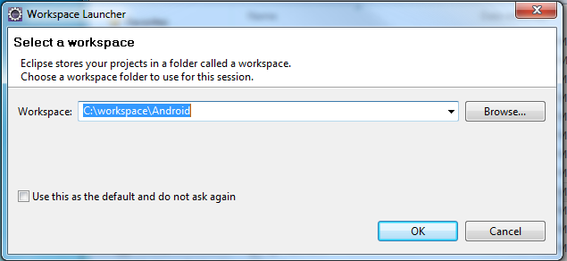
For new workspaces Click Window > Preferences a window will be displayed, at this time select Android. Select the installation location of your android SDK.
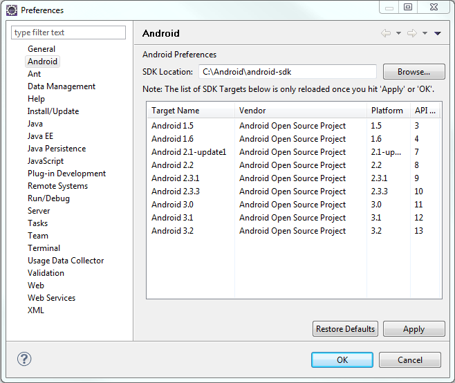
Then open a new project by Clicking File > New Android Project.

You will need to provide information in order to proceed.
- Choose a project name; this will be display as the root item in your project.
- Choose a Build Target; this will determine what components will be available to your application. It will also set a list of minimum requirements for the android device.
- Choose an Application Name; this will be used through your application and resources.
- Choose a Package name; this is where Eclipse will set you Java Package for this application.
- Finally, choose the Activity name; this is the main entry form for the Android application.
For this project Android 2.2 platform has been used to cover a wider target.
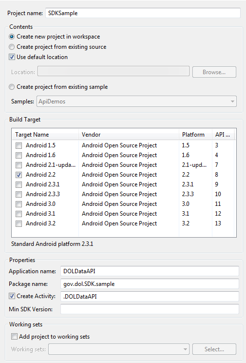
Add the SDK To Your Project
All requests require account credentials to be submitted along with the request.
This SDK contains a few classes needed to process service requests.
This package needs to be imported into your project. You can grab the Git repository.
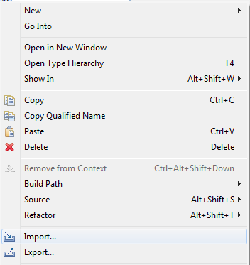
Import the Android_DOLDataSDK into your project using the General > File System option.
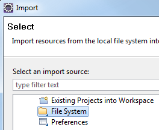
Choose the root path and click ok.
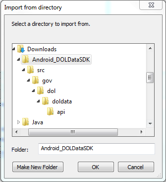
Locate the Dataset Path
Each Dataset has a Dataset Location path that gives the URL that will be needed to reach the Dataset on the API. For this sample, use
http://api.dol.gov/V1/DOLAgency

For the DOL Service Operation sample please use http://api.dol.gov/V1/SummerJobs
Define the User Interface
Add a new Layout to your project by navigating to res > layout folder and click the right mouse button to get a menu. Select New then select Android XML File.
In this window you choose the following options.
- File name - the name of the file, for this project, we will use list_item for the name. This name will be reference later in the code and is case sensitive.
- Resource Type - We are going to create a new Layout to display our results.
- Root Element - We are going to choose a TextView to be our root element to display.
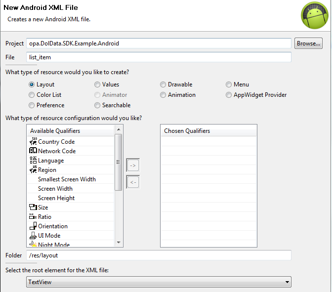
Adding a few lines to this file in the XML view will allow us to customize its appearance.
<?xml version=”1.0” encoding=”utf-8”?> <TextView xmlns:android=”http://schemas.android.com/apk/res/android” android:layout_width=”fill_parent” android:layout_height=”fill_parent” android:padding=”10dp” android:textSize=”16sp” > </TextView>
Implementing the Government Data Request
The DOLDataAPI.java file handles the behavior of the layout form that we created earlier.
This file is found under src > gov.SDK.sample.
The SDK classes need to be accessible from here so we add them with java import statements.
import govdata.api.GOVDataContext; import govdata.api.GOVDataRequest; import govdata.api.GOVDataRequestCallback;
Additionally, we are going to add a few more utility classes that will help us provide functionality not found in the SDK.
import java.util.ArrayList; import java.util.HashMap; import java.util.List; import java.util.Map; import android.app.AlertDialog; import android.app.ListActivity; import android.os.Bundle; import android.widget.ArrayAdapter; import android.widget.ListView;
For DOL Service Operation (e.g. Summer Job Plus) please import additional json package to parse the json result text.
import org.json.JSONArray; import org.json.JSONException; import org.json.JSONObject;
We will modify the basic DOLDataAPI Activity and use a ListActivity instead to handle multiple items. We also inherited functionality from the GOVDataRequestCallback interface to handle the results of the service call.
Secure logins are provided using the following code; we will need to modify both the ApiKey and the SharedSecret variable of this method to access DOL Data.
Add members to the DOLDataAPI ListActivity class within the DOLDataAPI.java file.
- The ApiKey corresponds to the Token identifier in your token list.
- The SharedSecret created during setup is the same value that is used in the DOLDataUtil class.
public final String API_KEY = “”; public final String SHARED_SECRET = “”;
public class DOLDataAPI extends ListActivity implements GOVDataRequestCallback {
/** Called when the activity is first created. */
// API Key and URL constants
public final String API_KEY = "";
public final String SHARED_SECRET = "";
public final String API_URI = "/v1";
public final String API_HOST = "http://api.dol.gov";
public final String API_DATA = "DolAgency/Agencies";
@Override
public void onCreate(Bundle savedInstanceState) {
super.onCreate(savedInstanceState);
}
// Callback method called when error occurs
public void GOVDataErrorCallback(String error) {
}
//Callback method called when results are returned and parsed
public void GOVDataResultsCallback(List<Map<String, String>> results) {
}
}Using This SDK With APIs From Other Federal Agencies
The example above uses DOL's API. Some federal APIs' URLs are structured differently. For example, let's look at http://business.usa.gov/api/article/xml
- API_LOGIN = ""
- API_KEY = ""
- SHARED_SECRET = ""
- API_HOST = "http://business.usa.gov"
- API_URI = "/api"
- API_DATA = "/article/xml"
Let's look at the Census Bureau. For example, http://api.census.gov/data/2010/acs5?key={your key}&get=B02001_001E,NAME&for=state:06,36
- API_LOGIN = ""
- API_KEY = "key={your key}"
- API_SECRET = ""
- API_Host = "http://api.census.gov"
- API_URI = "/data"
- API_DATA = "/2010/sf1"
Adding implementation to the onCreate method will setup the request to the DOL Data service.
For DOL API dataset :
The String method variable represents the Dataset and the table portion of the Data location path.
-Format( Dateset/Table) i.e. "DOLAgency/Agencies", "FORMS/AgencyFormsTable", "FAQ/Topics", "FAQ/SubTopics".
*Please Note: these paths are case sensitive, please refer to the corresponding Datasets for the correct formats.
@Override
public void onCreate(Bundle savedInstanceState) {
super.onCreate(savedInstanceState);
// Instantiate context object
GOVDataContext context = new GOVDataContext(API_KEY, SHARED_SECRET, API_HOST, API_URI, API_LOGIN, API_DATA);
//Instantiate new request object. Pass the context var that contains all the API key info
//Set this as the callback responder
GOVDataRequest request = new GOVDataRequest(this, context);
// API method to call
String method = “DOLAgency/Agencies”;
// Hashmap to store the arguments
HashMap<String, String> args = new HashMap<String, String>(3);
// Populate the args into the HashMap
args.put(“top”, “20”);
args.put(“select”, “Agency,AgencyFullName”);
//args.put(“skip”, “30”);
// Call the API method
request.callAPIMethod(method, args);
} For DOL service operation :
The String method variable represents the service method.
*Please Note: Each String typed parameter of service request must be surrounded in quotes in order to work correctly. These quotes are then Url encoded and passed to the Service Operation.
@Override
public void onCreate(Bundle savedInstanceState) {
super.onCreate(SavedInstanceState);
String methodname;
// Instantiate context object
GOVDataContext context = new GOVDataContext(API_KEY, SHARED_SECRET, API_HOST, API_URI, API_LOGIN, API_DATA);
// Instantiate new requst object. Pass the context var that contains all the API key info
// Set this as the callback responder
GOVDataRequest request = new GOVDataRequest(this, context);
// HashMap to store the arguments
HashMap<String, String> summerJobsArgs = new HashMap<String, String>(7);
// API method to call
methodname = "SummerJobs/getJobsListing";
// Populate the args into the HashMap
summerJobsArgs.put("format", "'json'");
summerJobsArgs.put("query", "'Farm'");
summerJobsArgs.put("region", "''");
summerJobsArgs.put("locality", "''");
summerJobsArgs.put("skipCount", "'8'");
request.callAPIMethod(methodname, summerJobsArgs);
}
Adding implementation to the GOVDataErrorCallback method will provide feedback for errors that occur during the request.
// Callback method called when error occurs
public void GOVDataErrorCallback(String error) {
//Show error on dialog
AlertDialog alertDialog;
alertDialog = new AlertDialog.Builder(this).create();
alertDialog.setTitle(“Error”);
alertDialog.setMessage(error);
alertDialog.show();
} For Government Entity API datasets calls :
Finally, adding an implementation to the GOVDataResultsCallback method will provide access to the results in the form of List of Map objects for DOL API calls.
// Callback method called when results are returned and parsed
public void GOVDataResultsCallback(List<Map<String, String>> results) {
// Create List of strings to populate the listview items
List<String> display = new ArrayList<String>();
// Iterate through list of results. Add each field to the display list
for (Map<String, String> m : results) {
display.add(m.get(“Agency”));
}
// Set list adapter.
setListAdapter(new ArrayAdapter<String>(this,R.layout.list_item,display));
// Enable text filtering
ListView lv = getListView();
lv.setTextFilterEnabled(true);
} For DOL service operation :
Finally, adding an implementation to the GOVDataResultsCallback method will provide access to the results in the form of List of Map objects.
The developer has to clean the json response text to get the clean json object from
service response. Sometimes, search results may have special characters which can throw an error during JSON serialization.
// Callback method called when results are returned and parsed
public void GOVDataResultsCallback(List<Map&String, String>> results) {
// Create List of strings to populate the listview items
List<String> display = new ArrayList<String>();
// Create JSON Object and JSONArray to store the data from DOLService operation.
JSONObject jsonObject = null;
JSONArray subArray = null;
// Iterate through list of results. Add each field to the display list
for (Map<String, String> m : results) {
try {
// Look for value of getJobsListing property.
if(null != m.get("getJobsListing"))
{
String jobs = m.get("getJobsListing");
// convert jString to the jObject
jobs = jobs.replaceAll("\\\\n", "");
jobs = jobs.replaceAll("\\\\\"", "\"");
jobs = jobs.replaceAll("\"\\{", "\\{");
jobs = jobs.replaceAll("\\}\"", "\\}");
// start extracting the content from jObject
jsonObject = new JSONObject(jobs);
if(null!=jsonObject)
{
// Look for an array of "item."
subArray = jsonObject.getJSONArray("items");
if(null!= subArray)
{
// Let's loop through each job
for(int i=0; i<subArray.length(); i++)
{
// Get the job title.
display.add(subArray.getJSONObject(i).getString("title"));
}
}
}
}
} catch (JSONException e) {
e.printStackTrace();
}
}
// Set the list adapter
setListAdapter(new ArrayAdapter<String>(this,R.layout.list_item,display));
// Enable text filtering
ListView lv = getListView();
lv.setTextFilterEnabled(true);
}
Configure Android Security
Android gives its users the ability to grant application access to features they choose. This requires our application to list the permissions this application needs in order for features to work correctly. This is done by adding the uses-permission tag to the AndroidManifest.xml file.
<uses-permission android:name=”android.permission.INTERNET”></uses-permission>
Run the Application
In order to run this application the emulator debug settings and the emulator need to be set up.
Press F11 or Run > Debug and a warning message will be displayed if an emulator has not been configured.
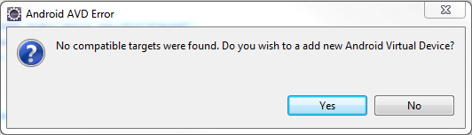
Continue to the next screen and add a new emulator.
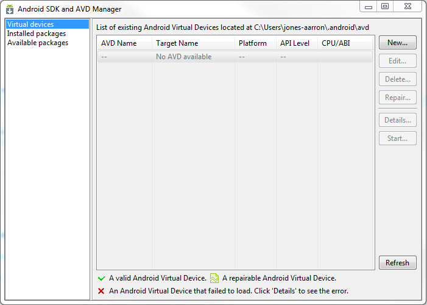
Give the emulator instance a name and configure the memory to your needs.
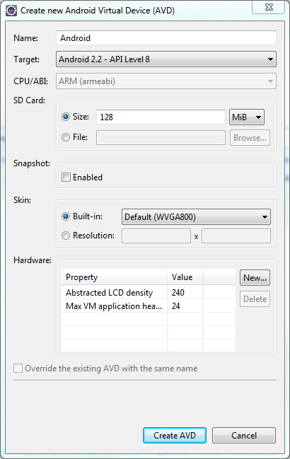
Later you can setup Debug properties for you application as needed.
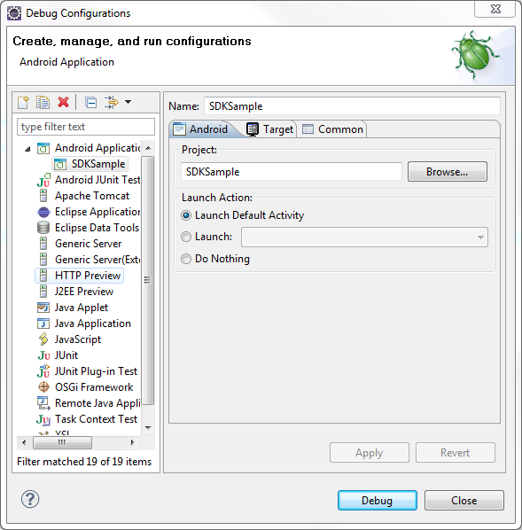
For DOL API dataset :
Run the application and you should see a list of Agencies in the grid.
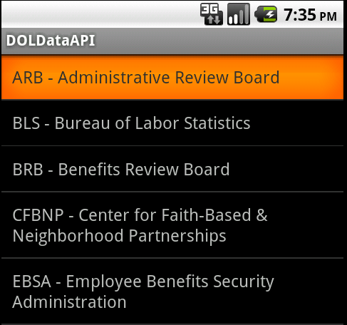
For DOL service operation :
Run the application and you should see a list of jobs in the grid.
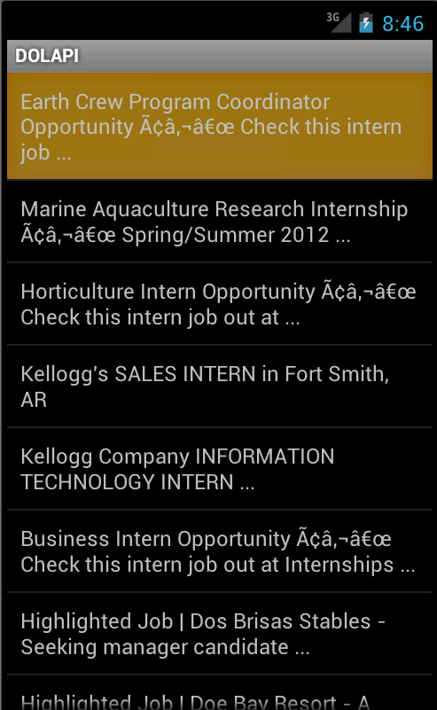